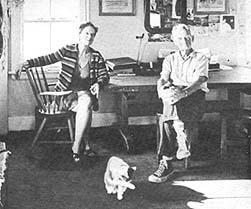

Helen and Scott Nearing have been living today's counterculture for better than a generation. Almost four decades ago (in 1932), the couple "dropped out" to a rockscrabble mountain farm in Vermont's Green Mountains where they spent the next 20 years rebuilding the soil, constructing solid homestead buildings from native stone; growing their own food, heating with wood they cut by hand and co--authoring numerous books and magazine articles. Tick off any of the present's most "in" passions-women's lib, equal rights, organic gardening, vegetarianism, radicalism, homesteading, subsistence farming, ecology-and you'll find that the Nearings have been doing instead of talking for 40 years.
In 1952, when "developers" began despoiling the slopes around them for a ski resort, the Nearings sold their Vermont farm, moved to a remote Maine cape and began all over again . . . clearing brush, building honest stone structures, planting vigorous gardens and-in general-making their place in the world on a soul-satisfying, sweat-of-the-brow basis.
Helen and Scott Nearing-then-are hard-working, proud people who pay their dues, think for themselves and stand on their own two feet . . . exactly the kind of folks that "made this country great. " Salt of the earth. Rugged individuals. People who stand up for what's right. The Great American Dream Couple. Folks who would be honored in every corner of this nation.
Well, yes and no. The Nearings most certainly have paid their dues and taken stand after lonely stand for their vision of right . . . only to find that truth, justice, honor, decency-even simple rational thought-can be a highly suspicious commodity here in The Land of The Free and The Home of The Brave.
A pacifist, Scott was tried for sedition by the Government for opposing U.S. entry into WWI. Acquitted by a jury, he was then blacklisted by the academic world for-among other things-his stand against child labor. His textbooks were even taken from the schools and he became a prophet without honor in his own country.
Of course, the U.S. Government and this country's academic circles have no monopoly on stupidity. Scott once joined the Communist Party . . . only to be expelled for writing a book that took exception to Lenin's theories on imperialism. Nobody loves a freethinker.
Nobody, that is, unless the freethinker lives long enough to see his "wildeyed, radical" theories become the staid, commonplace, taken-for-granted thoughts of a following generation. And that's exactly what has happened for Scott and Helen is Nearing now, many times over. Scott (88) and Helen (69) have simply endured . . . and the rest of us have slowly come around.
Despite his age, Scott currently lectures regularly across the United States and he has just completed a five-month world speaking tour on which he mainly addressed young socialists in Japan and India. The Nearings have also become frequent guests on the David Frost, Dick Cavett, Today and other talk shows and their more than 50 books are currently being rediscovered by hundreds of thousands of new readers.
The two books by Scott and Helen that MOTHER readers o seem to find most interesting are Living the Good Life, an account of their Vermont homesteading experience with an introduction by Paul Goodman, and The Maple Sugar Book , probably the most thorough blueprint ever written about sugaring, its history and how to make a living from it. Scott's autobiography will soon be released by Harper and Row.
PLOWBOY: What did you have in mind when you decided to drop out in Vermont?
SCOTT: I had a feeling, which I still hold, that in a militant situation the decisions should not be made by older people but by younger people. It was a sort of extension of the Indian principle. First a student, then a householder, then a sage. I think this is sound. When I was 35 I dropped out of all political activity, not because I wanted to drop out of it, but because I knew perfectly well - from watching people like Sam Gompers and Eugene Debs and others who continued to work politically in their 70's and 80's - that a man that old is not as vigorous and as vital as he was when he was in his 20's, 30's and 40's. So at about 35 I resigned all my committees and party connections and I've never been active in politics since.
Another factor behind the decision was that what had been a possible alternative to academic appointment - namely freelance lecturing and writing, which had gone very well through the period of muckracking and on down through the early 30's - came to an end. It had been possible when there were 5,000 socialist locals in the U.S. to go to almost any city, ask where the local was and find a literature committee, a lecture hall, forum or other things going on. This period came to an end. And people like me, talking on the left, had less and less opportunity to talk. Then the McCarthy period came along a little bit later and, if you continued to be in the left, it was just too bad.
Of course the third element entering the picture was the Depression of 1928-1938. These various factors made it essential and necessary to find an alternative way of livelihood. I never decided to do what some of my associates did . . . live out of a garbage can in various parts of Manhattan. 1 decided to make my living by what I call bread labor . . . making the things necessary to feed, clothe and house the population . . . to provide my share of the necessaries.
We decided that it was more advisable, from this point of view, to set up a self-contained homestead society than to try to fit into a market economy which we had all over the U.S., including the agricultural sphere. So we established our homestead in Vermont.
PLOWBOY: In Living the Good Life you said you didn't think your Vermont experiment was a total success because there wasn't a community - a shared ideology and common work - and for that reason it wasn't all that you hoped it would be.
HELEN: Personally for ourselves it was a great success. We accomplished all we wanted to and, in fact, it was too successful monetarily. We didn't want maple sugaring to become a business . . . we only wanted to support ourselves but we were getting more orders than we could handle and we would have had to set up a little factory and pay income tax. It became very successful personally but no one else wanted to do it with us. Besides, we didn't start out with the idea of a community, did we Scott?
SCOTT: No, we started out with the idea of making a living on a part-time basis so we could go on with our professional work . . . my economics and Helen's music. We had to have a place to live, clothing and food. All these things we had, and mostly by our own efforts, so we didn't have to go to the market. We either produced it ourselves or substituted something for it.
PLOWBOY: One of the criticisms that radicals sometimes make of drop-outs is to say that you really can't change society if you're off in the country gardening.
SCOTT: Well we've been off in the country gardening for nearly 40 years and during that time we've had some interesting experiences.
HELEN: And written a pile of books.
SCOTT: Now we're experiencing the fruiting of this experiment of ours. A great many people are becoming interested, not because of what we've been saying but because they're facing situations similar to what we faced in the 20's and 30's. What was exceptional among older people then is commonplace today. At that time it was still possible for young people to look forward to some kind of self-respecting career. Now this year, 1971, the graduates of high school and college . . . where will they go? where will they find jobs? can they afford to raise families? These questions present themselves in a very aggravated form. And the newspapers are saying and the Labor Department is saying, "We have no employment for you." Here's a great flood of young people coming out of the colleges and God! engineers by the thousands, chemists by the thousands.
HELEN: But you didn't cop out; you kept in touch with the world. You lectured, you taught and traveled whenever you had a chance. And you've written so many books. So you haven't copped out . . . this is the way you make a living, not a way to get away from the world.
PLOWBOY: During this period of fruition, have you noticed any significant trends?
SCOTT: In the last five years there's been a very definite change in the number of young people who are dissatisfied with the established situation and are looking for something different, not only reformistically but revolutionarily different. This has come about not only as a result of the black revolutionary movement . . . it's a part of it. For the blacks have also discovered that our society, founded on acquisition and gimme-gimme-gimme, is not a formula for living.
PLOWBOY: If you hadn't been blackballed in your academic career, do you think you would have made the move that you did? Would you have preferred to stay in the university community?
SCOTT: I was trained as an economist and sociologist, trained to function in the academic community. This meant that I had a captive audience of students; a new crop came every year and they were required to take certain courses. This was very exceptional in my case because I had the whole of freshman economics under my direction. I was doing the lecturing and some of the section work so I had the opportunity in the large to deal with about 500 freshmen and then with about 25 freshmen in small groups. At that time, of course, young people were getting interested in economic and sociological questions. So it was really an ideal set-up.
PLOWBOY: When was this?
SCOTT: This was in 1910. My last teaching job was in 1917.
PLOWBOY: What do you think of the back-to-the-land movement? You've seen interest in returning to the land come and go when you were in Vermont. Is today's movement different?
SCOTT: Every new generation will produce a certain number of people who, in the old days, ran away and went to se:. Today they leave the city and try to find a living on the land. They're adventurous, they're dissatisfied, they're unsettled their roots aren't down anywhere and the land has a certain appeal. This yen for the wilderness, for adventure, this yen break out of the ordinary is a common aspect of the life of a certain proportion of every young generation. They go to war, or go to Europe for an education or they may go out on the land . . . which is what they're doing at the moment. And those of them who succeed will stay there.
PLOWBOY: I have a feeling it's much bigger than it's ever been before. Perhaps it's just because we talk about it more than ever . . . the media constantly need trends to explore. Or maybe it's because of the ecology and health food consciousness . . . or because the cities are in much worse shape. These factors may mean it's more than a cyclical thing right now.
SCOTT: The cities are certainly in poor shape. The land boom is over and the possibility of making fantastic profits on city land is over. The city center is deteriorating and becoming repulsive and ugly. The new generation feels that very strongly; the older generation is accustomed to it. Smog, in a sense, you never get accustomed to. In the old days you didn't have any and now we do. So the city becomes more and more invidious - more and more undesirable - at the same time it offers less and less opportunity. Now we're in a period where there are a lot of young people looking for jobs. Not only looking for a particular job, but any job.
PLOWBOY: What do you think of today's young people and their reaction to you?
SCOTT: Well, I've had little opportunity to find out. When I was teaching I met a lot of young people but, at present, I meet them only occasionally, here and there. A number come around, but it's not really a big sample... it's a specialized group.
HELEN: Hundreds but not thousands.
PLOWBOY: What aspects of the youth culture do you dislike?
SCOTT: It's not up to me to like or dislike. It's up to the youth to prove or disprove. It doesn't make any difference to them whether I like or dislike. I don't have to live their lives and they don't have to live mine. They've got their lives to live.
PLOWBOY: What do you think of communes and the shared ownership of machinery?
SCOTT: Admirable, admirable . . . provided you can find a group of congenial people who not only get along together but will stay together long enough so that they can make their experiment a success. Some communes, for example, have gone along until September and October before they began to cut their winter wood. It should have been cut in April or the previous October.
You can't wait until the last minute to make provision for food, shelter and fuel. These things have to be very carefully worked out in advance. It can't be done off the cuff. It has to be done with a pencil and paper and a lot of give-and-take among the commune's membership. Barring this, the commune doesn't last. With careful planning and organization, with forebearance, the commune will succeed.
PLOWBOY: Well, your homestead and garden certainly reflects an obvious amount of planning and organization. How do you get to that point? Do you start with records or a calendar-like schedule that tells you, "April 28 we planted these seedlings . . ."
SCOTT: You have to do that. For instance, in Vermont the last frost used to come the first week in June. If you set out tomatoes and beans the last week in May and there's a slight frost you lose every tomato and bean. You don't want to repeat that mistake and you don't have to. You can write to the Department of Agriculture and they'll send you a contour map showing where and when the last frost occurs.
HELEN: Scott has a great garden book.
PLOWBOY: How often do you consult it? Every day?
HELEN: Yes. You need it to set work priorities.
SCOTT: Every row in the garden is numbered. Compost piles are numbered. Helen the other day asked me, "When did we get our first blueberries last year?" I've got the date down - in `70, `69, `68 and so on. We were going somewhere and we had to know when the picking time started and we had the answer right there. We knew we had to pick 30 or 40 quarts a day and we couldn't afford to go away at that time. It's indispensable. You've got to know the weather, your crops, and so on.
PLOWBOY: What other advice would you give to somebody who's thinking about homesteading?
SCOTT: It's not easy to answer a question like that in any detail. The first aphorism would be, 'Look before you leap.' Be careful what you do, be sure in advance that you're making a wise move.
The second aphorism would be, `Pay your own way.' Don't spend a dollar until you have it, don't go into debt, don't accept interest slavery any more than any other form of slavery.
The third rule: `Don't expect results in the first 20 minutes.' If you go into any new job or field there's always an adjustment to make. If you leave the city and go into the countryside, it will take you several years before you really get rooted, established, settled and accustomed to the new pattern of life.
HELEN: I'd add two more aphorisms: `Be prepared to, work hard' and `Find the right mate.'
PLOWBOY: About a million acres of U.S. soil is being withdrawn from possible agricultural use each year because of urbanization, road building, etc. More and more city people are buying up country property for summer homes and hunting lodges. Do you think homesteading is going to be less feasible in the future?
SCOTT: Well there's a lot of land in the world, in the U.S. - in Maine and New York - that's going back into brush and forest, that's perfectly good agricultural land. There's no shortage of land. Even though the cities are deteriorating, the lure of the cities is still increasing . . . especially for the second generation. The first generation forms a commune and the second generation is lured back to the city by radio, by television, photographs, news stories, and so on. By many factors. The landlords in the cities want rent and the manufacturers want labor to exploit. The people who run the cities want a lot of young people to come in, work cheap and help those in control to pile up big profits. It isn't a lack of land that keeps people from homesteading.
PLOWBOY: What about the physical well-being of homestead life? You haven't been treated by a doctor in 40 years. To what do you attribute your good health? your good health?
SCOTT: I attribute my good health to the good fortune which brought me in contact with Bernard McFadden when I was in high school. He was a young man who got sick and the doctors gave him 90 days to live. He proceeded to care for himself with fresh air, exercise and various dietary changes. Then he began publishing a magazine called Physical Culture, the purpose of which was to persuade young people that the way to be healthy was to take care of your health . . . especially your diet. You did that by experimenting, learning, adopting a pattern of life - not necessarily of your ancestorsbut a pattern that seemed most acceptable to you. This is an experimental, rational attitude. If you live the way your parents did you're living traditionally and customarily.
PLOWBOY: Could you be more specific about your own diet?
SCOTT: There are a number of basics. In the Russian school system they say, "The sunshine, fresh air and clean water are our best friends." If you get these, you've got a good start. If you can find a market that sells clean, fresh, unprocessed, unpoisoned food you've made another big step and, it's now increasingly possible to get such food in the U.S. Of course we emphasize raw, whole, unprocessed food . . . as directly as possible from the source. No drugs, no stimulants, no condiments, no sugar, no salt, no spices.
PLOWBOY: It seems to me that the homesteading, ecology and health food movements are obviously related and that a common problem is the notion of private property. The land owners - chemical companies, farmers, mining companies, whatever - don't realize that they're trustees of their land. How hopeful are you, after all these years of being a socialist, of altering the notion of inviolate property rights?
SCOTT: We need to think of natural resources - the water, land, minerals - as the property of each succeeding generation . . . not as the personal property of one generation or group of individuals. The real question is, "Can these natural resources be kept in such apple pie order that not only our generation but the next, the next and the next also enjoy them?"
In my generation we said our natural resources were inexhaustible. We no longer say that because we've learned through bitter experience it isn't true. Our forests and minerals and other resources are being exhausted. Now the question is, "What can we do before they're lost for good?" Instead of depleting resources, we need to conserve them.
PLOWBOY: Yes, but how are we going to do that when people who own them - or think they do - can dispose of in any way they see fit?
SCOTT: This question was very simply solved in Mexico in 1917, after 7 years of revolution. The Mexicans wrote a constitution in which there was this clause: the natural resources of Mexico are the property of the Mexican people,. not in 1917, but always.
Now we take it for granted that the highways are the property of the American people. And we take it for granted that the schools are the property of the people. But the resources have, up to a certain point, been the property of private vested interests who use them for their own profit. A point was reached in Mexico and then in Russia - the Mexican revolution antedated the Russian by about six months - and subsequently in various other countries: they all have constitutions which say the countries' resources belong to the people. This concept, not of "mine" but "ours", is accepted and followed by a very large group all over the world now and there are about a billion people living in countries that are trying to build socialist societies.
HELEN: Is revolution the only way to do this?
SCOTT: Revolution is the first overturning of the established order. Since our established order in the U.S. is based on the private ownership of most natural resources, there has to be a revolution in our attitudes and viewpoint, and in our institutions and legislation.
PLOWBOY: Can there be a revolution without violence?
SCOTT: One of the most interesting revolutions that has occurred in the U.S. during my lifetime is a complete turning away from the idea that you ought to pay a worker as little as possible. When I was young there was a business in Pittsburgh that paid 90 cents a day. The director of the firm was called "Ninety-Cent Oliver." Henry Ford came along a little later. He was paying his workers $1.50 a day and he proposed to make a car that cost $600.
Ford figured out that it would take a worker - if he had a family - a long, long time before he could ever afford to buy a car. So Henry Ford did two things. He said, "First I'm going to pay a minimum wage of $5 a day . . . I'm going up from $1.50 to $5. Second, I'll loan you the money to buy the car and you'll pay me back over a certain period of time and, in the meantime, you'll be driving to and from work in the car."
This introduced what is now called the mass market. Henry Ford sold his Model T's by the millions because wages were raised and consumer credit was established. This was a complete change-about from the days of Ninety-Cent Oliver, when you paid a man as little as possible.
We've just come back from India and when I talked with employers there about this, they looked very skeptical and said, "that might work in the U.S. but it won't work in India." Because they're still manufacturing and selling to the middle and upper classes. The people in. India generally don't have much more than enough to buy food and shelter. In the U.S. we now have an entirely different point of view. We say, "In order to be self-respecting we've got to have X dollars a week." This is the minimum wage. If you pay less than that, you can't sell typewriters, bicycles, automobiles and TVs. Increasingly our economy is maintained by selling these rather expensive consumer goods. Therefore we pay the worker enough so he can afford to buy them.
HELEN: If I've followed you this far, you're trying to say you can have a revolution other than a political revolution - an economic revolution.
SCOTT: No, I'm saying this was one of the most impressive revolutions I've seen. Revolution means a complete turnabout.
PLOWBOY: So then you think we could have a political revolution that isn't necessarily violent?
SCOTT: Of course.
PLOWBOY: How do you feel about demonstrations and civil disobedience?
SCOTT: At one point or another in the lives of individuals and communities direct action becomes necessary. The Declaration of Independence says, in effect, that when those in authority can no longer handle situations the general welfare requires that the people take over and find an alternative. That's what the introduction of the Declaration of Independence is about. If George III had behaved himself there wouldn't have been any Declaration of Independence. But he was acting in a way that was inimical to the interests of the colonials.
PLOWBOY: It's pretty clear you've experienced repression in your background, and there's a lot of talk in the counter-culture today about repression. What do you think of the curent situation?
SCOTT: As far as repression is concerned - that is, the deliberate withholding of information and opportunity - we are pretty well into the status the Italian fascists and German Nazis had reached in the 20's and 30's. We're rapidly approaching the point where individuals just coming out of high school or college will find it increasingly difficult to find congenial jobs. And if the graduates do find such jobs, they're going to find it increasingly difficult to make enough to live. And if the individuals protest, they're going to be shot down . . . either economically by losing their jobs or politically by being cast into prison.
There's nothing new about repression and its cycles in this country. We had the Red raids through World War One and the McCarthy period in the 50's. There have been any periods of repression in the United States.
PLOWBOY: There have been a number of articles recently talking about students now becoming more passive and 'interested in their private lives, less prone to violence. Do you think this kind of disillusionment - if that's what it is - is inevitable and that violence is ineffective? Or is violence effective but simply not desirable?
SCOTT: Violence is ineffective and undesirable. Of course you have to define violence. Each generation decides what violence is and ordinarily it's legislated against. Now an interesting aspect of our situation in the U.S. is that people go to Washington or Times Square and sit down. There's nothing violent about that but if 10,000 people do it then it becomes a form of coercion, like a strike or a boycott, and it can be used effectively.
PLOWBOY: You've been interested in the problem of racism for quite a long time. You wrote Black America in 1929 and I've been wondering what you think of current black strategy. Is it wise for blacks to seek admission to the middle class when there seems to be so much dissatisfaction with the middle class lifestyle? Are blacks going to have to . . .
SCOTT: Duplicate white experience? It's very obvious that our experience with class differences and property ownership, etc., hasn't worked out very well for the whites. There's no reason to suppose that it will work out any better for the blacks.
PLOWBOY: What's to be done about it? You can't just say to to an impoverished black in the ghetto that he really doesn't want he a tract house on Long Island.
SCOTT: Increasingly, in a technological or scientifically-oriented society, race has little or no significance. It may be, as in South Africa, that a society is highly race conscious. But this does not fit in with the need to increase opportunities for specially trained people to function effectively and to be rewarded effectively. It doesn't make a difference whether a person is black, yellow, red or white. The question is does he understand electronics, chemistry, public relations or whatever? If he understands these things and is willing and able to function, he is useful. If people continue to emphasize racism in areas where it is obviously irrelevant, then they're barking up the wrong tree and unnecessarily making trouble for themselves.
PLOWBOY: I know you've visited a lot of Third World countries. Where does this leave them? Their model of success seems to be the U.S., at least economically.
HELEN: Not in China, Albania, Rumania, Czechoslovakia, Poland.
PLOWBOY: I'm thinking of Asia, Latin America and Africa and the lust for television and big cars which has caused us a whole set of ecological problems. Is this likely to be duplicated in the emerging countries?
SCOTT: In Canada and Australia our mistake is being duplicated at the present time but I would guess that the socialist countries, generally, are going to escape it. I think that China is very likely going to get by the illusion that the more you possess the happier you'll be.
PLOWBOY: Why do you think so?
SCOTT: The Cultural Revolution which has been functioning actively in China since 1965 is oriented definitely and directly against acquisition and accumulation and for the common good. "Serve the people" is one of their slogans. Instead of saying "Get rich," they say, "Serve the people." In so far as they raise a generation convinced that everybody will be better off if everybody is better off . . . Take the Constitution of the U.S.: We the people in order to develop a union, to establish justice, to preserve tranquility and to provide for ourselves our common welfare. . . This is the preamble. This is very definitely not me-for-me. This is ours-for-us.
PLOWBOY: Let me ask Helen about women's lib. One of the movement's concerns is sex roles. You two don't seem to have fallen into such roles to any serious extent. How have you worked that out?
HELEN: Scott does most of the directing of the outside work and I direct most of the inside work. But I help him largely outside and he helps me a great deal inside. He surpasses in one line and I in another. We don't pretend to be equal . . . we're not. I'm a better musician than he is. Scott has little musical facility but he is very practical. Then again., I do have a practical side too and Scott's garden, you must admit, is very artistic. We try to supplement each other. We don't try to equal or surpass, and therefore the question of who is better or superior never arises.
PLOWBOY: How do you work on books?
HELEN: We'll decide beforehand who gets what chapter and then we go over each other's work. By the time it's finished - for instance, The Maple Sugar Book or Living the Good Life- we don't know really who wrote what portions. I can recognize certain sections that he or I wrote, but our work is finally amalgamated. Even his new book, the autobiography. He wrote it all himself, but I've typed it four times and I've had many, many ideas on each chapter - each page - as I go along. So even his autobiography - which is an intensely personal thing - had a large share in.
PLOWBOY: What about the lecturing?
HELEN: He's the speaker.
SCOTT: Not necessarily. We both talk.
PLOWBOY: In The Conscience of a Radical you said capitalism's health depends on scarcity and that abundance causes problems. But isn't the drive for abundance and consumption endless? What are the prospects that people will learn "to do more with less"?
SCOTT: That's a good question. How many hats and pairs of shoes do you want? If you have five are you better off than if you have one and if you have 50 are you better off than if you have five? This is the problem of diminishing utility: at what point do you cease to be interested in having another suit of clothes or another pair of shoes?
Douglas Fairbanks is supposed to have died with 450 suits of clothes. If I had that many I wouldn't know where to put them. Here I don't event need a suit - a pair of pants, a shirt and a sweater - that's all.
PLOWBOY: What I'm driving at is that, perhaps, we'll never feel that we've reached the stage of abundance. People will feel an endless need for something new.
SCOTT: We've reached a state of abundance now.
PLOWBOY: Yes, but people still want flashy cars, color TVs. wall-to-wall carpeting and pink refrigerators. Maybe capitalism will never experience a serious decline decline :n demand for goods and services.
SCOTT: This is much wider than capitalism. This is the utilitarian conception . . . that the more things you have, the happier you'll be. Multiplying things means multiplying well-being. This is false and psychologically it's contradicted by the law of diminishing utility: each increment of goods does not result in a corresponding increase of satisfaction.
PLOWBOY: Then you think that the reason so many young people are fed up with middle class life is that they've reached the saturation point`?
SCOTT: At 10 years of age they've had it all. Why should they they go on looking for more, more, more? Are their parents and grandparents so happy? So magnificently satisfied that the children want to imitate them? The parents are already separated or quarreling.
If we had a society that was outstanding and shiningly successful - successful - in every sense of the word - then there'd be some reason for following along. But if our society is going to pieces under our feet, why should we try to maintain it? Why support the establishment? To hell with the establishment! That's what the kids are saying. They're making bombs.
PLOWBOY: What do you think is our most serious ecological problem?
SCOTT: The white man has been living here for 250 years. When he came to this continent he found a very nice ecological balance. Now we have upset the balance quite definitely. For example, we have opened up the land to erosion and in the course of these two and a half centuries we've lost a third of our topsoil here. Topsoil is built in New England at the rate of 1 inch every 300 years. If we have no topsoil, we can't raise crops, we can't survive. This is not a population problem.
In the South, where there's some beautiful land, what did they do? They put in tobacco and then another crop of tobacco, then another. Then they abandoned the land and cleared another piece. In the meantime, this open land ran down with every shower, every melting snow, into the Atlantic Ocean or the Mississippi Valley.
PLOWBOY: What about overpopulation?
SCOTT: In all those countries where a large proportion of the people have a high school education, the population is static. In countries where a large proportion have a college education, the population is declining. As people become aware, more trained and thoughtful, more experienced, the possibilities of controlling population is augmented.
PLOWBOY: You both seem to think in the future a lot.
HELEN: We had a very interesting meeting in Kyoto with some alienated American kids who are now living there, studying Zen, macrobiotics and Japanese. At the end of the evening, one girl told us, "I enjoyed everything you said but two things impressed me very much. One is your relationship together . . . I've never known older people who had this nice, simple, affectionate and respectful attitude toward one another. The second is your attitude toward time. You said it took you 10 years to do this and 5 years to do that. We think of today and tomorrow, but you - even at your age - think in terms of decades." And that impressed her.
PLOWBOY: Do you ever expect to "retire", as it were?
SCOTT: In the ordinary sense, I retired from politics when I was 35. I retired from teaching - rather, I was retired - in 1917 but I retain my interest in teaching, education, economics and sociological problems . . . and I continue to collect material and write.
HELEN: You've got ten more books you want to write!
PLOWBOY: I know you're interested in the occult. What areas?
HELEN: The Eastern religions certainly have more to say to us than the Western. Christianity seems quite primitive by comparison. I was brought up by parents who were interested in Eastern religion. We had a lot of books about that sort of thing in the library and many interesting Easterners came to visit our home when I was a child.
When I first met Scott - who was a Communist Party member at the time - to my amazement we had interests in common. I could hardly believe it. This man who was so hard-headed in one respect, was so open in others. He felt that feeding, housing and clothing people was very essential, very primary and very elementary and after that there was the whole of life and the purpose of life-what it was all about, what we're here for, the ultimate aim and goal - and he was quite interested in those subjects.
PLOWBOY: Do you believe in an afterlife of some sort?
HELEN: In continuity. Therefore pre-existence and after-existence. Yes. This is not just a flash in the pan, this is one day in school. It's a long process.
PLOWBOY: Why do you hold that belief? Is it the result of a personal experience, say something approaching a "religious" experience?
HELEN: It seems rational. It's a good explanation of life as He see it and of people as we know them. It may not be the truth It would be very hard for a human being to apprehend the truth but this is a very plausible explanation of the different kinds of people we see around us, the different levels, the different stages. There are different stages in their long lifecycle.
PLOWBOY: This accounts for the differences between people rather than, say . . .
HELEN: The extreme talent of a Beethoven. Mozart or Einstein. They've worked at it before.
SCOTT: They're still working at it.
PLOWBOY: You can make some sort of an argument for that but there isn't proof.
HELEN: Proof?
PLOWBOY: You couldn't convince a pure rationalist of its plausibility just by discussion.
HELEN: We don't try to, we're not proselytizing. You may not be a vegetarian, but you might know all the good reason. for being one . . . you just aren't going to go that far. OK,we're not trying to make vegetarians. We live what we consider a a decent way and we're sorry if somebody else doesn't want to live a decent way. We won't eat our brother animals but, it if you do, that's as far as you are. And, in turn, we're much behind other more advanced people who are living even higher, better and more worthwhile lives. We'd like to get to that level too.
SCOTT: At some point, just as you have to proceed from "I" to "we", from the individual to society, you have to proceed from the earth and the terrestial sphere to the planetary chain . . . to the circles upon circles until you get into our island universe. In other words there is the individual and society, and also the cosmos.
The individual is a member of society and the human society is an aspect of the cosmos. Just as I talk about psychology and you talk about sociology, somebody else talks about cosmology. The individual is interesting, the society is interesting . . . the cosmos is also interesting. And we know enough about the cosmos to know it's a very elaborate functioning organism - organization, organa - whatever you want to call it. It's a unit with gravitation, electronics, whatnot. These forces work . . not only here on earth, but in the stars and planets. So cosmology, in a sense, is much more liberating than sociology.
Sociology deals with our relationships but cosmology deals with relationships that go beyond the human race, beyond the planet, beyond earthbound forces into cosmic forces. This is not a question of survival of the individual or reincarnation . . . it's simply an awareness that should be a part of everybody's experience.
Just as everyone should know something about sociology more than about himself every person should know something about the cosmos, of which he is an essential and integral par t. This need not be esoteric. The astronomer doesn't regard this as esoteric. Neither does the philosopher. In fact, they discuss these very questions.
Unfortunately, such discussions are ordinarily reserved for graduate students and people on a higher level of training or experience. But kids in the 6th or 7th grade can understand cosmology also. Cosmology is just as real as sociology and psychology. It's an extension of the principle "know thyself" Know thyself psychologically, socially and cosmologically.
|
 |
|
|